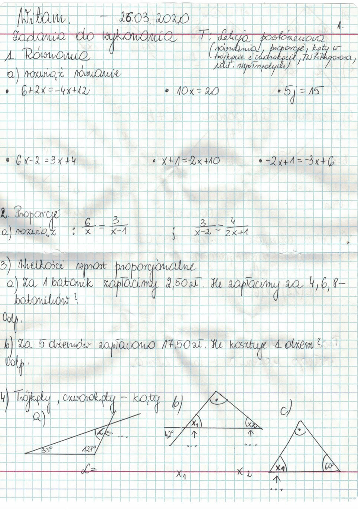
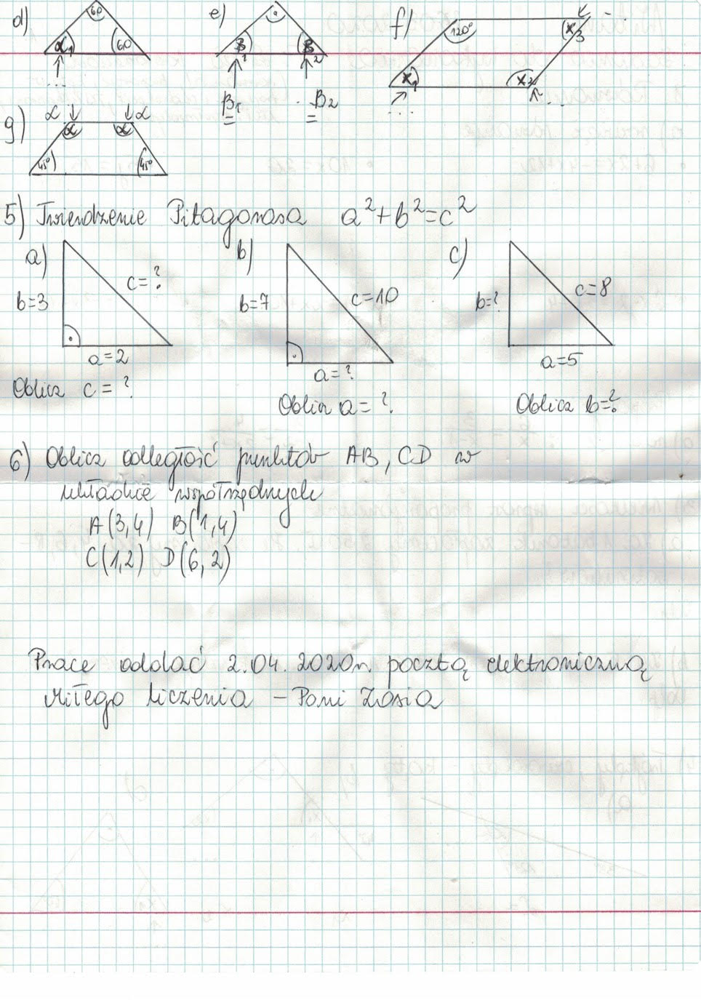

Nauczanie zdalne
Klasa 8A
wychowawca Beata Klimowicz
Piątek 27.03.2020r
Religa
W-f
Informatyka
Kl.8a Religia
Katecheza 45 (na dzień 25 marca br.)
Powołanie do małżeństwa, oraz czym jest małżeństwo sakramentalne
Moi drodzy zaczynany się e-katechizować :), mam nadzieję, że jakoś damy radę. Nie mam was zamiaru zadręczać ilością materiału. Dlatego każda katecheza będzie się zaczynała od krótkiej notki co i jak/czym dany temat się je, możliwe, że będzie filmik, małe coś do zrobienia i natka do zeszytu co sprawdzę jak się w końcu na lekcji spotkamy
A wiec do dzieła!!!
Czym jest powołanie?
Powołanie (łac. vocatio wołanie, zapraszanie) zwykle kojarzy się z byciem księdzem, zakonnikiem albo zakonnicą. Tymczasem w Kościele katolickim to pojęcie ma zdecydowanie szersze znaczenie. Kto i do czego może być zatem powołany, czyli wzywany, zapraszamy przez Boga?
O Wszyscy ludzie powołani są do miłości Bóg jest miłością i stworzył człowieka z miłości, powołał go także do miłości, która jest podstawowym i wrodzonym powołaniem każdej istoty ludzkiej.
O Wszyscy chrześcijanie powołani są do świętości.
O Wszyscy chrześcijanie powołani są do głoszenia swojej wiary.
Oprócz tego każdy człowiek został przez Boga obdarowany osobistym powołaniem związanym z konkretnym stanem (małżeńskim, kapłańskim, życiem w samotności {nie mamy tu na myśli wyobcowania z kontaktów interpersonalnych}), czy też z konkretnym zajęciem życiowym (lekarz, piekarzem itd.
Czym jest powołanie do małżeństwa?
Cechą najzupełniej szczególną powołania małżeńskiego jest to, iż jest ono skierowane do dwojga ludzi i przyjęte oraz realizowane - przez dwoje.
Powołanie Boże zawiera w sobie dwa składniki: dar i zadanie. Powołanie jako dar zawiera wezwanie do "komunii/jedności", natomiast jako zadanie wezwanie do posłannictwa. Komunia stanowi istotny aspekt, odznaczający się trwałością na całą wieczność, natomiast posłannictwo, które wynika z powołania, ogranicza się tylko do ziemskiego życia.
Stwórca powołuje człowieka najpierw do istnienia, które jest sposobem bycia i formą jedności z Nim. Człowiek otrzymuje od Boga całe swoje człowieczeństwo, na które składa się wewnętrzna relacja męskości i kobiecości, oraz całe swoje powołanie, ukierunkowane ku stworzeniu rodziny. Dla mężczyzny i kobiety, których Bóg powołuje do życia w małżeństwie, pierwszym darem są oni sami nawzajem dla siebie, następnie ich życiodajna miłość oraz cała rzeczywistość małżeńsko-rodzinna, w której zanurzona jest ich ludzka egzystencja, a przez którą Stwórca i Odkupiciel pragnie do nich przemawiać.
Powołanie do małżeństwa to nade wszystko powołanie do miłości. Jest to miłość szczególna, w której chodzi o swoistą głęboką wspólnotę życia i miłości. Tylko miłość sprawia, że małżonkowie urzeczywistniają siebie przez bezinteresowny dar z siebie. Miłość bowiem jest dawaniem i przyjmowaniem daru. Dar osoby dla osoby z istoty swojej jest trwały i nieodwołalny. W tym wzajemnym darze wyraża się oblubieńczy charakter miłości. Znajduje się ona u początków przymierza małżeńskiego i jest właściwym motywem zawierania tego przymierza.
W małżeństwie chrześcijańskim miłość między małżonkami pozostaje w ścisłej relacji do miłości istniejącej między Chrystusem a Kościołem, czyli w relacji sakramentalnej. Stąd, dopiero dar sakramentu małżeństwa jest właściwym powołaniem i przykazaniem dla chrześcijan, wezwanych do małżeństwa, który proklamuje wymóg pozostania sobie wiernymi na zawsze, ponad wszelkie próby i trudności w wielkodusznym posłuszeństwie woli Pana.
Bóg powołuje małżonków nie tylko do szczególnego uczestnictwa w swej miłości, ale zarazem do wolnej i odpowiedzialnej współpracy w przekazywaniu życia ludzkiego. Z tej racji nie mogą oni poprzestać na przekazaniu daru fizycznego życia, lecz winni ubogacić dzieci wszelkimi owocami postaw moralnych, duchowych i nadprzyrodzonych, podejmując zadanie umożliwienia im życia w pełni ludzkiego. Dlatego też w zakresie życia moralnego, duchowego i nadprzyrodzonego sami są powołani do ustawicznego postępu, szczerego i czynnego pragnienia coraz lepszego poznawania wartości, które prawo Boże chroni i rozwija, oraz kierowania się nimi w konkretnych decyzjach.
Z woli Boga, wszyscy małżonkowie są powołani do świętości, a to powołanie realizuje się w miarę, jak osoba ludzka potrafi odpowiedzieć na wezwanie, zawarte w przykazaniach Bożych. Małżonkowie powołani są do uświęcania swego życia małżeńskiego i samych siebie. Mogą osiągnąć ten cel przez praktykowanie cnoty wiary i nadziei, przez spokojne przyjmowanie wszystkich rodzinnych problemów, przez wytrwałość w miłości i przez entuzjazm, z którym winni spełniać swoje obowiązki.
Zobacz filmik: (proszę nie zapomnieć włączyć polskich napisów ikonka w pasku odtwarzacza)
a. Co to jest małżeństwo?
https://www.youtube.com/watch?v=smjkwo30Atk
b. Prawdziwa miłość...
https://www.youtube.com/watch?v=Co7HKsGnaks
Pytania kontrolne:
Odpowiedzi wraz z pytaniami zapisujemy w zeszycie.
1) Jakie dwie cechy zawiera w sobie powołanie?
2) Jaka jest cecha szczególna powołania do małżeństwa? (przez ile osób musi być realizowane)
3) Powołanie do małżeństwa to przede wszystkim powołanie do............
Notatka do zeszytu:
Różnica między małżeństwem, a sakramentem małżeństwa polega na tym, że w pierwszym przypadku mówimy o prawnym związku między kobietą a mężczyzną, a w drugim to związek między kobietą i mężczyzną, do którego zapraszają oni Chrystusa, aby codziennie umacniać swoją miłość Jego łaską.
Edukacja dla bezpieczeństwa
Temat: Zabiegi sanitarne i specjalne.
Witam wszystkich. Rozpoczynamy zdalne nauczanie z EDB. To co dzisiaj się dzieje dookoła nas, w związku z pandemią Koronawirusa SARS-Cov-2, jest ściśle powiązane z tematyką naszych zajęć. Dużo informacji dociera do Was z zewnątrz. Proszę o przeczytanie poniższych artykułów i zrobienie krótkiej notatki aby powtórzyć sobie informacje o zapobieganiu skażeniom i zakażeniom.
https://gis.gov.pl/aktualnosci/nowy-koronawirus-sars-cov-2-zalecenia-2/
Epidemia występowanie w określonym czasie i na określonym terenie przypadków zachorowań lub innych zjawisk związanych ze zdrowiem w liczbie większej niż oczekiwana
Pandemia nazwa epidemii o szczególnie dużych rozmiarach, na dużym obszarze, obejmującej kraje, a nawet kontynenty.
Pytania do notatki:
1. Jakie są objawy zarażenia koronawirusem?
2. Jak przenosi się wirus?
3. Jakie są zalecenia Głównego Inspektoratu Sanitarnego, żeby się nie zarazić?
Pozdrawiam Anna Prędki
Kl.8a Informatyka
Temat: Przedstawianie danych w postaci wykresu
Proszę obejrzeć krótki film:
http://psp1.pionki.pl/index.php/przedmioty-3/informatyka/klasa-8/2274-07-przedstawianie-danych-w-postaci-wykresu
Zadanie.
1. Wykonaj tabelę i wykres zgodnie ze wzorem znajdujące się pod filmem.
2. Plik zapisz jako np. JanNowak1 i prześlij go w załączniku na adres:
jakrzemian@gmail.com
Program LibreOffice można bezpłatnie pobrać i zainstalować ze strony:
https://www.dobreprogramy.pl/LibreOffice,Program,Windows,21562.html
kl.8a dziewczyny Wychowanie fizyczne
Temat: Ćwiczenia ogólnorozwojowe
#zostanwdomu #trenuj w domu!
Pomoce: mata lub koc ,skakanka lub sznurek, hantle lub 2 butelki z wodą 0,5l
1.Przysiady - zrób przysiady ramiona przed sobą
Ćwiczenie powtarzamy x15
2. Leżenie przodem (na brzuchu) - naprzemiennie podnoś prawą rękę i lewą nogę, i odwrotnie.
Ćwiczenie wykonaj x15
3."Deseczka" (Wasze ulubione ćwiczenie)- połóż się na brzuchu i oprzyj przedramiona przed sobą. Stopy oprzyj na palcach. Unieś tułów ,nogi oraz biodra. Opieramy się tyko na przedramionach i palcach stóp.
PAMIĘTAJ ! Twoje ciało powinno tworzyć linię prostą
Ćwiczenie wytrzymujemy 1 minutę (dacie radę, trzymam kciuki)
4. Leżenie przodem- wyciągnij ręce przed siebie, unieś klatkę piersiową nad podłogę i uginając łokcie ściągaj dłonie do tyłu
Ćwiczenie wykonaj x15
5.Wspięcie na palce - stajemy w lekkim rozkroku. Wznosimy się na palce -ramiona unosimy w górę,i opadamy -ramiona opuszczamy w dół. W dłoniach trzymamy hantle(butelki)
Ćwiczenie powtarzamy x15
6. Skoki przez skakankę (sznurek)
Ćwiczenie wykonaj przez 1 minutę
w-f chłopcy
Zapraszam na zajęcia z wychowania fizycznego w ramach nauczania zdalnego .W tym tygodniu wasze zadanie to wykonywanie ćwiczeń ogólnorozwojowych. Każde ćwiczenie należy powtórzyć 10 razy. Przypominam o wykonaniu rozgrzewki.
Pamiętajcie jednak, aby ćwiczyć tylko wtedy, kiedy jesteście zdrowi .Jeśli cokolwiek wam dolega,żle się czujecie albo coś was boli to nie ćwiczymy.
Ćwiczenia są wam dobrze znane i nie powinny Wam sprawić problemów.
Przed rozpoczęciem ćwiczeń wykonujemy rozgrzewkę, powinna trwać ok. 10 - 15 minut .Wszystkie ćwiczenia znacie z lekcji WF , wiecie jak je
bezpiecznie i prawidłowo wykonać.
Zachęcam do aktywności w tym trudnym dla nas czasie .
Poniżej zamieszczam moją propozycję ćwiczeń na aktywność w domu :
1. ćwiczenia znane wszystkim " pajacyki" - 10 powtórzeń
2. przysiady - 20 powtórzeń
3.brzuszki - 20 powtórzeń
4. pompki klasyczne { mogą być na kolanach} - 10 powtórzeń
5. wchodzenie na stopień { może być niskie krzesło} - 15 powtórzeń
Każdą serie powtórzyć 3 razy lub w zależności od samopoczucia
Zachęcam do korzystania z dostępnych w Internecie wielu propozycji ćwiczeń fizycznych do samodzielnego wykonania w domu.
Bogdan Wojna
Czwartek 26.03.20r.
geografia
j. angielski
technika
matematyka
Geografia kl.8
Temat: Kanada.
Kanada państwo położone w Ameryce Północnej, rozciągające się od Oceanu Atlantyckiego na wschodzie do Oceanu Spokojnego na zachodzie i Oceanu Arktycznego na północy. Na południu i północnym zachodzie graniczy ze Stanami Zjednoczonymi. Drugie państwo świata pod względem powierzchni (po Rosji)
Obszar obecnej Kanady zamieszkiwały od tysięcy lat ludy tubylcze (plemiona Indian i Inuitów). Rozpoczęte pod koniec XV w. brytyjskie i francuskie ekspedycje zbadały całe atlantyckie wybrzeże Kanady, co spowodowało stopniowe ich zasiedlenie przez brytyjskich i francuskich obywateli.
Pierwszymi przybyszami z Europy byli Wikingowie.
Kolejnymi Europejczykami, którzy badali atlantyckie wybrzeże Kanady, byli: John Cabot w 1497 r. w imieniu Anglii oraz Jacques Cartier w 1534 r. w imieniu Francji. Około 1610 r. Anglia założyła placówki rybackie na Nowej Fundlandii i Trzynaście kolonii na południu. W latach 16891763 toczyła się seria czterech kolonialnych wojen Anglików z Indianami i Francuzami.
W 1867 cztery kolonie wchodzące w skład Brytyjskiej Ameryki Północnej uchwaliły
Konfederację Kanady i powołały do życia nowe państwo Kanadę. Stopniowy proces uniezależniania się od Wielkiej Brytanii osiągnął punkt kulminacyjny w 1982, gdy uchwalenie nowej zerwało ostatnie więzi zależności od parlamentu brytyjskiego.
Kanada do dziś pozostaje monarchią konstytucyjną, z Elżbietą II jako głową państwa. Kanada jest krajem dwujęzycznym i wielokulturowym, w którym na poziomie federalnym obowiązują dwa języki oficjalne: angielski i francuski.
Uzupełnij i przepisz tekst do zeszytu:
Kanada jest
co do wielkości państwem na świecie. Tereny Kanady zamieszkiwali .............. Inuici. Pierwszymi przybyszami z Europy byli............... a następnie przypłynęli Anglicy i..............Do życia, Kanada została powołana w...........roku a w 1982 r uniezależniła się od Wielkiej...............
W kraju obowiązują 2 języki:................
Klimat:
Klimat w Kanadzie jest zróżnicowany i zależy od szerokości geograficznej. Na północy Kanady występuje klimat subpolarny i polarny. W centrum kraju występuje klimat kontynentalny chłodny, natomiast na południu jest on umiarkowany ciepły. W rejonie Gór Kordylierów spotkamy się z klimatem górskim. Jednym z ważniejszych czynników kształtujących klimat Kanady jest zimny Prąd Labradorski i ciepły Prąd Północnopacyficzny. Między północną a południową częścią kraju występuje bardzo duża rozpiętość temperatur. Tak więc na północy Kanady średnia temperatura lipca wynosi 5 °C, a na południu 21 °C. W styczniu natomiast temperatury wahają się od 35 °C na północy kraju do 1-4 °C na południowym zachodzie.
Przeważającą część
terytorium Kanady porastają iglaste lasy- tajga Ze względu na warunki naturalne większość mieszkańców kraju skupia się na południu.
Przemysł:
Kanada jest państwem uprzemysłowionym i zaawansowanym technicznie, o zróżnicowanej gospodarce. Ma najbardziej na świecie rozwinięty przemysł drzewny i celulozowo-papierniczy
Posiada ogromne złoża gazu na wschodnim wybrzeżu oraz duże złoża gazu i ropy
Jest największym na świecie producentem: cynku, uranu, złota, niklu, aluminium i ołowiu
Uzupełnij i przepisz tekst do zeszytu:
W Kanadzie na północy panuje klimat...............a na południu............... Występują duże różnice............... między północą a południem, dlatego ludność mieszka w części ...............
Jest to kraj bogaty w surowce............... takie jak:...............
Technika grupa 1
Temat :Jak powstaje prąd elektryczny w elektrowni konwencjonalnej?
https://www.youtube.com/watch?v=nC3wM6a9ZAg
Zastanów się , czy produkcja energii elektrycznej w ten sposób , jest przyjazna dla środowiska.
.................................................................................
Klasa 8
Topic: Healthy and unhealthy habits (Present Simple)
Zdrowe i niezdrowe przyzwyczajenia (powtórzenie czasu teraźniejszego Present S.)
Zadanie 1: Dopasuj wyrazy do dwóch grup (które z tych przyzwyczajeń są zdrowe, a które nie). Przetłumacz wyrazy na jzyk polski.
go jogging, eat fresh fruit and vegetables, smoke, eat fast food (hamburgers), bush your teeth, do exercises, watch a lot of tv, drink alcohol, walk to school, drink fizzy drinks, sit in front of the computer (fizzy drinks- gazowane napoje, fresh- świeży, do exercises- robić ćwiczenia)
1) Healthy habits: 2) Unhealthy habits:
Zdrowe przyzwyczajenia: Niezdrowe przyzwyczajenia:
........................................... .....................................................
............................................. ...................................................
............................................. ..................................................
............................................ ..................................................
Zadanie 2: Przypomnij sobie przysłówki częstotliwości ( always, sometimes, usually, often, never) i przetłumacz zdania na język polski.
I eat fruit every day. ..........................................................................
I always brush my teeth after breakfast. .........................................................
My sister goes jogging every morning. ............................................................
We often do exercises. ..........................................................................
She never smokes. ..........................................................................
I dont drink fizzy drinks because they are unhealthy. .........................................
You should eat a lot of fresh fruit because they are healthy .....................................
(a lot of dużo, because [bikoz] ponieważ)
Technika/ pracownia gospodarstwa domowego Kl. 8- grupa 2
Temat: Ozdabianie tkanin - aplikacja
I. Zadanie pierwsze
Przeczytaj na Wikipedii czym jest aplikacja naszyta na tkaninie (link poniżej)
https://pl.wikipedia.org/wiki/Aplikacja_(zdobnictwo)
Żeby wykonać aplikację na tkaninie musimy zrobić plan pracy i przygotować odpowiednie narzędzia i materiały.
II. Zadanie drugie
Przepisz do zeszytu:
Plan pracy:
1. Wykonanie projektu aplikacji
2. Przygotowanie materiałów i narzędzi
3. Ciecie tkaniny
4. Spięcie szpilkami wyciętych z tkaniny elementów - aplikacji
5. Fastrygowanie aplikacji na tkaninie
6. Przyszycie aplikacji na tkaninie ściegiem przed igłą.
III. Zadanie trzecie
Obejrzyj na stronie internetowej poniżej przykłady aplikacji.
https://www.google.com/search?q=aplikacje+na+tkaninie+dla+dzieci+%C5%82atki&tbm=isch&source=univ&client=firefox-b-d&sa=X&ved=2ahUKEwiBm8joybXoAhVJ_SoKHRXCDN0QsAR6BAgKEAE&biw=1696&bih=804
IV. Zadanie czwarte
Narysuj projekt własnej aplikacji. Proszę żeby projekt był duży - narysowany na całej stronie w zeszycie. Zeszyt z wykonanym zadaniem sprawdzę gdy się spotkamy w szkole.
Matematyka
Temat: Lekcja powtórzeniowa {równania, proporcje, kąty w trójkącie i czworokącie, twierdzenie Pitagorasa, układ współrzędnych)


środa 25.03.2020r.
plan lekcji
język polski
chemia
muzyka
Język polski
Temat lekcji-Sprawdzian ze znajomości lektury Mały Książę- test.
Zadania dla ucznia: Przepisz tekst do zeszytu odpowiadając na pytania . Sprawdzenie zadania po powrocie do szkoły.
1. Planeta Księcia nosiła nazwę
...........................................................................................................
2. Planeta była:
a) średniej wielkości
b) bardzo mała
c) prawie taka, jak Ziemia
3. Co Mały Książę robił codziennie na swojej planecie?
a) wyrywał pędy baobabów
b) przeczyszczał wulkany
c) karmił baranka
4. Do codziennych zajęć Księcia nie należało:
a) podgrzewanie śniadań
b) oglądanie zachodów słońca
c) wyrywanie pędów baobabów
5. Lotnik zawarł znajomość z księciem:
a) przy studni
b) na Saharze
c) w ogrodzie pełnym róż.
6. Na planecie Małego Księcia rosły:
a) różne duże drzewa
b) jedna róża
c) dynie
7. Mały Książę opuścił swoją planetę przy pomocy:
a) żmii
b) samolotu
c) wędrownych ptaków
8. Pierwsze stworzenie spotkane przez Księcia na Ziemi to:
a) lis
b) żmija
c) lotnik
9. Oswoić to znaczy:
a) stworzyć więzi
b) wytresować
c) ochraniać kloszem
Chemia
Temat: Porównanie właściwości alkoholi
Obejrzyj film na youtube
https://youtu.be/kSnJUnhITVg
I odpowiedz na pytania:
1. Czy etanol ma właściwości lotne?
2. Czy etanol jest palny? Jak wygląda płomień? Czy dymi?
3. Jaki ma wpływ na białko?
4. Jaką barwę ma alkohol etylowy?
5. Jaki stan skupienia?
Wejdź na stronę wikipedia. Wpisz hasło "Metanol". Odpowiedz na pytania:
1. Jaką barwę ma metanol?
2. Jaki stan skupienia?
3. Jaki ma zapach?
4. Czy jest palny? Jak się spala?
5. Czy miesza się z wodą?
WOS
Temat lekcji: Sejm i Senat - powtórzenie wiadomości.
Bardzo proszę o obejrzenie filmiku, wirtualny spacer po Sejmie i Senacie.
https://www.youtube.com/watch?v=1oemlQCikVc